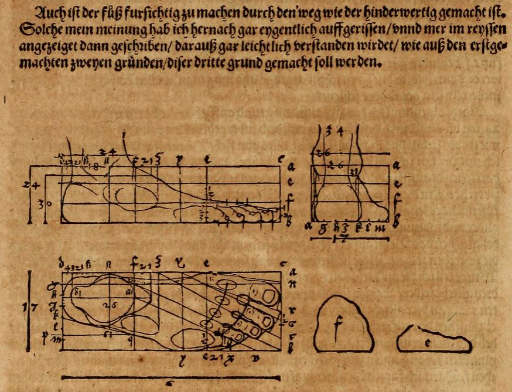
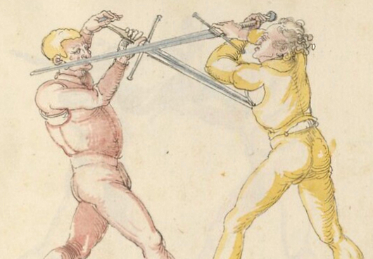
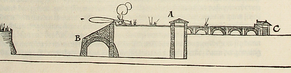

Four Books on Human Proportion
Dürer had long been captivated by the idea that a mathematical proportion of the human form could be the key to portraying beauty. While he would always rely on proportion in his art, his contacts in the Italian renaissance would eventually convince him that human beauty did not have a single perfect form.
This publication: the Four Books on Human Proportion was published posthumously by his wife Agnes in 1528.
Albrecht Dürer's Meditation on the Handling of Weapons

This illustration from Dürer's 1512 fencing manual is an example of many such works he made. These illustrations were far superior to those in most of the German fencing manuals.
Various Lessons on the Fortification of Cities, Castles, and Localities
Published in 1527 with 21 illustrations, this book mostly restated ideas by da Vinci and di Giorgio. However, it was the first German book on fortifications.
